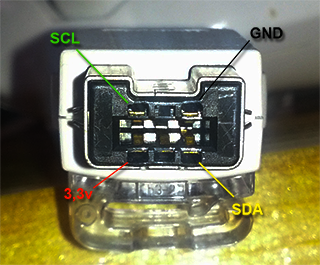
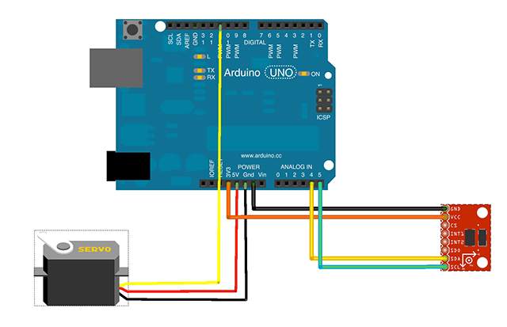
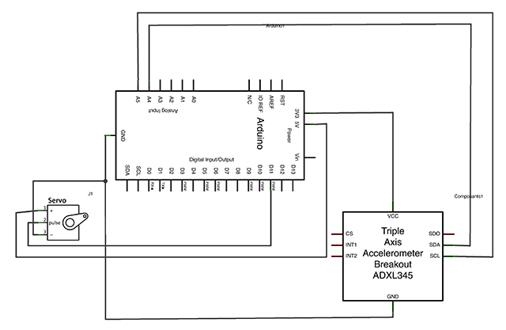

Tutoriel Arduino : Comment contrôler un servomoteur avec un nunchuck de Wii
, Alexis Couronne - [ Electronique :: Code ]Il a quelques temps (2 ans en fait), j'ai réalisé un petit montage basé sur un kit Arduino qui permettait de contrôler un servomoteur à partir d'un nunchuck. Suite à de nombreuses demandes, j'ai décidé (avec beaucoup de retard) de réaliser un petit tutoriel à ce sujet.
Ce dont vous avez besoin
- 1 servomoteur
- 1 nunchuk de console Wii
- 1 kit Arduino (pour ma part j'utilise le Arduino UNO R3)
- 1 breadboard (ou platine de prototypage)
- quelques straps (ou fils de liaison)
Les principes du montage
Le nunchuck Wii utilise le protocole de communication I2C. Ce qui nous va très bien puisque Arduino gère très bien ce protocole via les broches analogiques 4 (SDA) et 5 (SCL). Depuis la version Uno R3, 2 nouvelles broches peuvent être utilisées pour cela : SDA et SCL qui se trouvent à coté de la broche AREF. Si vous possédez cette version de l'Arduino vous pouvez donc au choix utiliser l'une ou l'autre paire de broches. Pour ma part je vais utiliser les broches analogiques 4 et 5.
Coté software, Arduino possède une librairie prévu pour cela : Wire.
La photo qui suit nous montre à quoi correspond chaque broche du câble Nunchuck Wii.

Vous remarquerez qu'en plus des broches SDA et SCL, le nunchuck a besoin d'une alimentation de 3,3v. Attention à ne pas mettre une tension supérieure au risque de le déteriorer.
Le servomoteur quant à lui possède 3 fils : 2 pour l'alimentation (+5v et GND) et un troisième pour le contrôler. Ce dernier doit absolument être connecté à l'une des 6 broches PWM de votre Arduino.
Coté software, là aussi, Arduino nous propose une librairie qui va bien : Servo.
Partie électronique
Pour la réalisation des schémas qui suivent j'ai utilisé un logiciel bien pratique : Fritzing. Celui-ci est gratuit et multi-plateforme. Il permet de réaliser rapidement des montages avec une vue de la platine d'essai, une vue shématique et enfin une vue du circuit imprimé. Vous trouverez à la fin de cette article le fichier Fritzing du montage.
Le composant "Nunchuck" n'étant pas encore disponible dans la bibliothèque de Fritzing j'ai pris un composant assez proche pour le représenter dans notre schéma.
Vue de la platine d'essai

Vue shématique du montage

Comme vous pouvez le constater, le schéma de ce montage est très simple !
Partie programmation
#include <Servo.h>;
#include <Wire.h>;
// Doit être ajusté en fonction de chaque nunchuck
#define ZEROX 530
#define ZEROY 530
#define ZEROZ 530
// adresse I2C du nunchuck
#define WII_NUNCHUK_I2C_ADDRESS 0x52
// définition d'une variable Servo
Servo servomoteur;
// définition d'une variable counter
int counter;
// définition d'un tableau de données
uint8_t data[6];
void setup()
{
// on attache le servomoteur à la pin 11 (PWM)
servomoteur.attach(11);
// initialisation du nunchuck
Wire.begin();
Wire.beginTransmission(WII_NUNCHUK_I2C_ADDRESS);
Wire.write(0xF0);
Wire.write(0x55);
Wire.endTransmission();
Wire.beginTransmission(WII_NUNCHUK_I2C_ADDRESS);
Wire.write(0xFB);
Wire.write(0x00);
Wire.endTransmission();
}
void loop()
{
// on demande 6 octets au nunchuck
Wire.requestFrom(WII_NUNCHUK_I2C_ADDRESS, 6);
counter = 0;
// tant qu'il y a des données
while(Wire.available())
{
// on récupère les données
data[counter++] = Wire.read();
}
// on réinitialise le nunchuck pour la prochaine demande
Wire.beginTransmission(WII_NUNCHUK_I2C_ADDRESS);
Wire.write(0x00);
Wire.endTransmission();
if(counter >= 5)
{
// on extrait les données
// dans mon exemple j'utilise uniquement les données d'accélération sur l'axe Y
double accelX = ((data[2] << 2) + ((data[5] >> 2) & 0x03) - ZEROX);
double accelY = ((data[3] << 2) + ((data[5] >> 4) & 0x03) - ZEROY);
double accelZ = ((data[4] << 2) + ((data[5] >> 6) & 0x03) - ZEROZ);
// on limite la valeur entre -180 et 180
int value = constrain(accelY, -180, 180);
// on mappe cette valeur pour le servomoteur soit entre 0 et 180
value = map(value, -180, 180, 0, 180);
// on écrit sur le servomoteur la valeur
servomoteur.write(value);
// un petit delai pour pas saturer le servomoteur
delay(100);
}
}
Ce code a été inspiré par celui-ci.
Résultat
Voici donc le résultat :
A vous de jouer :-)
Téléchargez le fichier zip des sources et schéma.